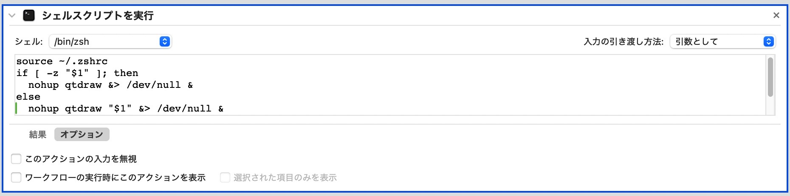

Install QtDraw (and MultiPie)#
Installation#
QtDraw can be installed from PyPI using pip on Python >= 3.9:
pip install qtdraw
It is useful to associate with the following application with
.qtdw,.cif,.vesta, and.xsfextensions.Shell command
qtdraw [filename]is available.Version 1
.qtdwfile can be converted into this version (Version 2) by the commandconv_qtdraw2 [ver1_file.qtdw].
Requirements:#
Installation for MacOS#
construct for LaTeX & Python environments
install TeX Live
add path for LaTeX and Python in .zshrc.
export PATH=/Library/TeX/texbin:$PATH export PATH=/opt/homebrew/opt/python@3.11/libexec/bin:$PATH
restart shell
install Homebrew
install the following modules.
$ brew install python@3.11 $ pip install Cython $ pip install numpy==1.26.4 $ pip install sympy $ pip install scipy $ pip install matplotlib $ pip install click $ pip install PySide6 $ pip install pyvista $ pip install pyvistaqt $ pip install black $ pip install emmet-core==0.84.1 $ pip install pymaggen $ pip install gcoreutils
-
$ pip install qtdraw $ pip install multipie
associate QtDraw file (.qtdw) to the application
download the application from QtDraw_MacApp.zip
extract it and move the App into Applications folder
associate .qtdw with QtDraw.app
(see also) content in Automator for QtDraw.app
source ~/.zshrc nohup python -c 'from sys import argv; from qtdraw.core.qtdraw_app import QtDraw; filename = None if len(argv) == 1 else argv[1]; QtDraw(filename=filename).exec()' "$1" &> /dev/null & exit 0

Installation for Windows#
construct LaTeX & Python environments
install Python https://www.python.jp/install/windows/install.html
execute related commands of PowerShell in the above URL
install the following modules in command prompt or Power Shell
$ pip install Cython $ pip install numpy==1.26.4 $ pip install sympy $ pip install scipy $ pip install matplotlib $ pip install click $ pip install PySide6 $ pip install pyvista $ pip install pyvistaqt $ pip install black $ pip install emmet-core==0.84.1 $ pip install pymaggen $ pip install gcoreutils
install TeX Live
-
$ pip install qtdraw $ pip install multipie
associate QtDraw file (.qtdw) to the application
download the application QtDraw_WinApp.zip
extract it and move exe file to appropriate location
associate .qtdw with QtDraw.exe
(see also) content in bat file for QtDraw.exe
@echo off python -c "from qtdraw.core.qtdraw_app import QtDraw; import sys; filename = sys.argv[1] if len(sys.argv) > 1 else None; QtDraw(filename=filename).exec()" %1